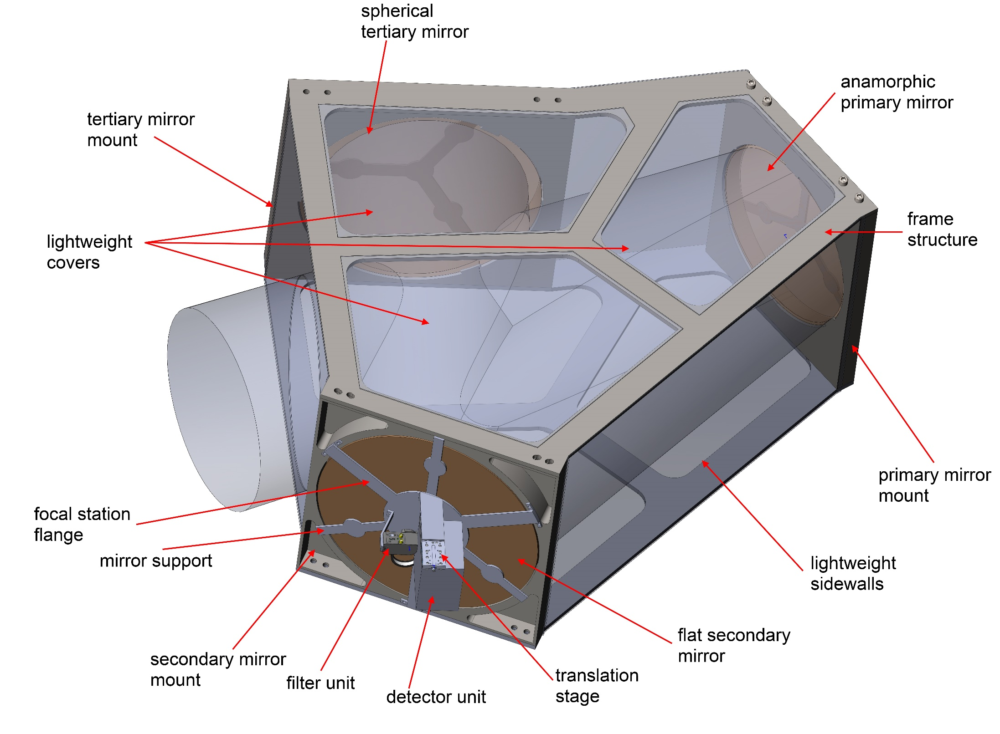

Simona Lombardo
Astronomer
Simona Lombardo
Astronomer
Simona Lombardo is involved in R&D activities in astronomical instrumentation. She was previously engaged in design, contruction, characterization and commissioning of a calibration device for integral field spectrograph, SCALA (SNIFS Calibration Apparatus). She is currently employed as post-doc at the Laboratoire d'Astrophysique De Marseille working on end-to-end simulations and construction of CASTLE (Calar Alto Schmidt Lemaître Telescope), to test the technology of curved detectors and observe the ultra-low surface brightness Universe and search and detect transients objects.
simona.lombardo@lam.fr
Email Address
My developer page
Github Profile
My Linkedin page
Linkedin Profile
Work Experience
-

2017-Present: Post-Doc
Le Laboratoire d'Astrophysique De Marseille, France.
- End-to-end simulation of ground demostrator for CASTLE.
- Characterization of curved detector.
- Developing exposure time calculator for POLLUX (LUVOIR).
-
2012-2017: PhD Astronomy
A flux calibration device for Integral Field Spectrographs.
The manuscript is downloadable at this link.
Humboldt-Universität zu Berlin, Germany.
During my Ph.D. I've been mainly working to develop a flux calibration device for the Super Nova Integral Field Spectrograph (SNIFS), the SNIFS Calibration Apparatus (SCALA), which is mounted at the UH88 telescope's dome (Mauna Kea) and running since one year. SCALA's goal would be to calibrate the "telescope + SNIFS" system at the 1% precision level and, with such an accurate calibration, refine the primary standard star network. I've been involved in the development of SCALA on several levels: I've contributed to the construction of the optical model, I've lead the simulations and lab testing, I've also participated and planned the two commissioning stages. Finally, I analyzed and evaluated the calibration data acquired obtaining throughtput curves.
Education
-

2009-2012: Master's degree
Astronomy and Astrophysics
Thesis title: "Readout system for transition edge sensors."
Department of Physics, University of Rome, Italy. -
2006-2009: Bachelor's degree
Physics and Astrophysics
Dissertation title: "The search for the missing barions with observations of the Sunyaev-Zel’dovich effect."
Department of Physics, University of Rome, Italy.
List of Projects
-
CASTLE
To Do: summary.
CURVED DETECTOR
Our fully-functioning first curved detector prototype is now under characterization. This detector is concave with a radius of 150mm over a size of 24x32mm² and it represents a first step towards implementations of curved focal planes and consequent reduction of optical elements resulting in better performances.
POLLUX
POLLUX is a high-resolution, UV spectropolarimeter proposed for the 15-meter primary mirror option of LUVOIR. POLLUX has been designed to deliver high-resolution spectroscopy (R ≥ 120,000) over a broad spectral range (90 - 400 nm). Its unique spectropolarimetric capabilities will open-up a vast new parameter space, in particular in the unexplored UV domain and in a regime where high-resolution observations with current facilities in the visible domain are severely photon starved. For more information navigate to the POLLUX website.
SCALA
SNe Ia can be used as standard candles to measure the dark energy equation of state parameter, w. Having observed a good number of these objects, current studies are limited by systematic uncertainties, among which relative (color) flux calibration is dominating. This work presents a way to solve, or at least limit, the problem with the SNIFS Calibration Apparatus (SCALA). SCALA's goal is to provide high precision calibration for the “telescope+ SNIFS” system and refine the primary standard star network, to eliminate the uncertainties due to the knowledge of their models. SCALA produces 18 quasi-parallel and collimated monochromatic (and wavelength tunable) beams with opening angles of 1 degree. The combination of these beams allows us to achieve an illumination of the focal plane of the University of Hawaii 88 inches telescope (UH 88), that is flat to within 1%. SCALA was commissioned in 2014 and fully deployed in 2015. In the in-situ set up, one of the SCALA beams is constantly monitored by a photodiode (calibrated against a NIST-calibrated photodiode), which is used as flux standard to transfer the NIST-calibration to the telescope+instrument first, and the standard star spectra afterwards.
CASTLE
-
Messier is a wide field space mission with the goal of observing ultra-low surface brightness objects (mag > 30) such as extended nearby galaxies and cosmic web. Our goal at LAM is to build a ground demonstrator for such mission, whose design has to meet the requirements impose by the science goals: no refractive surfaces and high quality PSF through the full field of view. This translated into a reflective schmidt design with curved focal plane and aspherical primary mirror. As the pathfinder design has been finalized, we want to ensure the quality of the final data product by simulating the full system including astrophysical sources, atmospheric extinction, raytrace of photons through the optical system and CCD effects.
List of Publications
-
Next-generation telescopes with curved focal surface for ultralow surface brightness surveys.
Lombardo, S.; Muslimov, E.; Lemaître, G.; Hugot, E.
-
Curved detectors developments and characterization: application to astronomical instruments.
Lombardo, S.; Behaghel, T.; Chambion, B.; Jahn, W.; Hugot, E.; Muslimov, E.; Roulet, M.; Ferrari, M.; Gaschet, C.; Caplet, S.; Henry, D.
-
SCALA: In-situ calibration for Integral Field Spectrographs.
Lombardo, S.; Küsters, D.; Kowalski, M.; Aldering, G.; Antilogus, P.; Bailey, S.; Baltay, C.; Barbary, K.; Baugh, D.; Bongard, S.; Boone, K.; Buton, C.; Chen, J.; Chotard, N.; Copin, Y.; Dixon, S.; Fagrelius, P.; Feindt, U.; Fouchez, D.; Gangler, E.; Hayden, B.; Hillebrandt, W.; Hoffmann, A.; Kim, A. G.; Leget, P.-F.; McKay, L.; Nordin, J.; Pain, R.; Pécontal, E.; Pereira, R.; Perlmutter, S.; Rabinowitz, D.; Reif, K.; Rigault, M.; Rubin, D.; Runge, K.; Saunders, C.; Smadja, G.; Suzuki, N.; Taubenberger, S.; Tao, C.; Thomas, R. C. A&A accepted.
-
Calibrating the SNfactory Integral Field Spectrograph (SNIFS) with SCALA
Küsters, Daniel; Lombardo, Simona; Kowalski, Marek; Aldering, Greg; Nordin, Jakob; Rigault, Mickael. SPIE, 2016.
-
A flux calibration device for the SuperNova Integral Field Spectrograph (SNIFS)
Lombardo, Simona; Aldering, Greg; Hoffmann, Akos; Kowalski, Marek; Kuesters, Daniel; Reif, Klaus; Rigault, Michael. SPIE, 2014.
-
Progress towards a double flux-locked-loop scheme for SQuID readout of TES detector arrays
Torrioli, Guido; Lombardo, Simona; Macculi, Claudio; Piro, Luigi; Colasanti, Luca. SPIE, 2014.